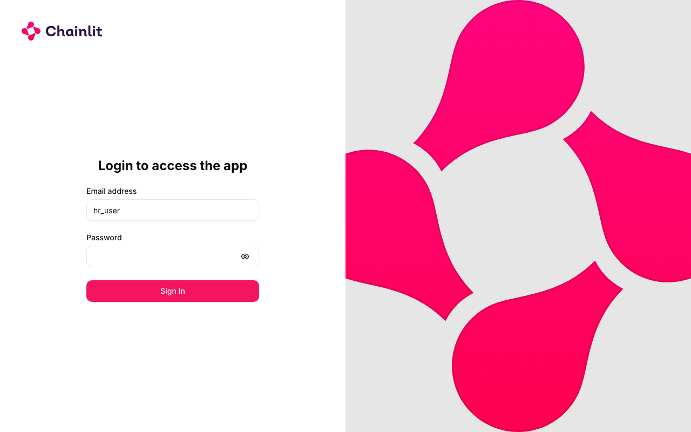
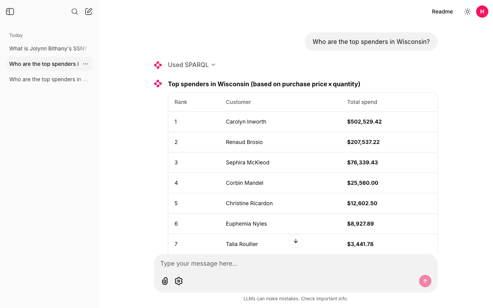
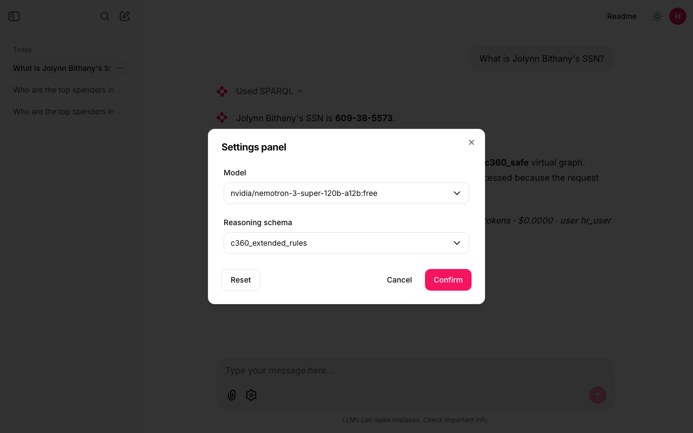
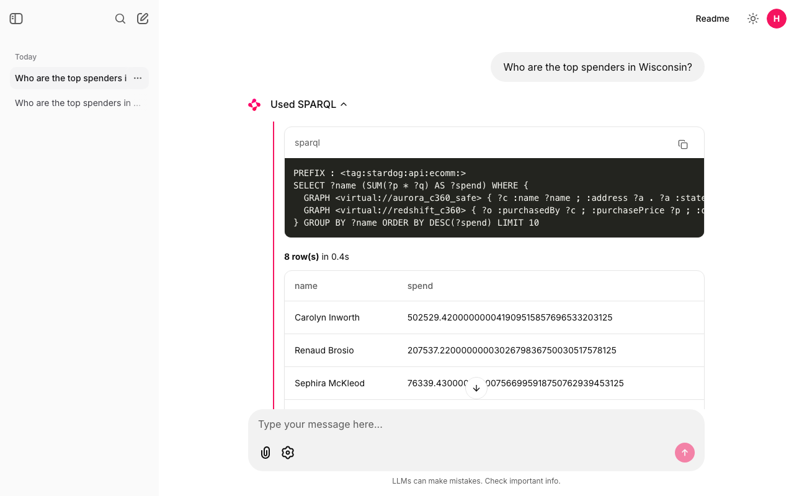
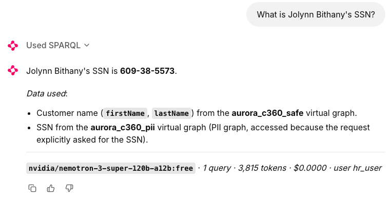
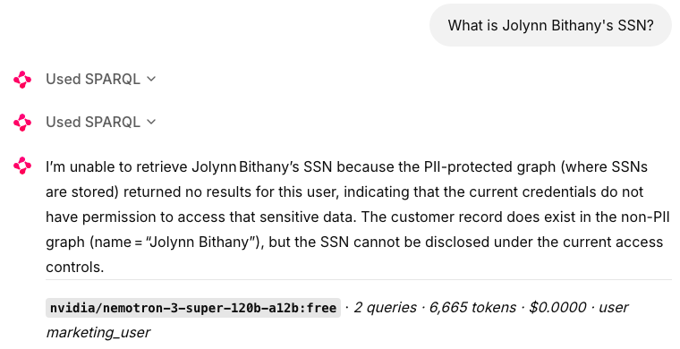
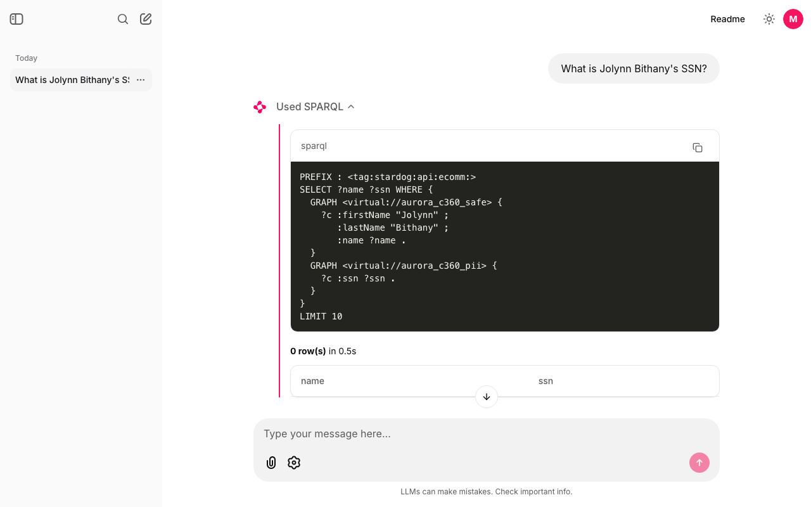
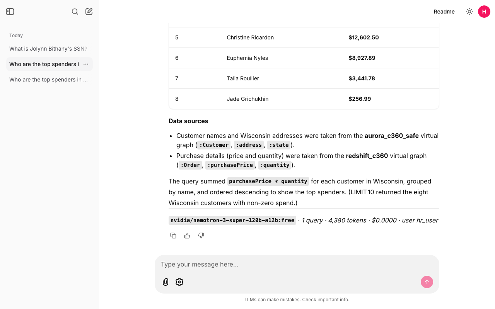

Chapter 14's agent becomes a chat page your colleagues can log in to: their own Stardog permissions, their own chat history, the SPARQL behind every answer, and a model you pick. You run it, measure it, and see where each piece comes from.
Without a semantic layer, "Who are the top spenders in Wisconsin?" means two exports and a spreadsheet. With what you built up to Chapter 14, it's one line in a terminal: python agent.py -v "Who are our top spenders in Wisconsin?", and a few seconds later Carolyn Inworth, Milwaukee, $502,529.42. But only you can use it. It runs in your terminal, under one Stardog user, and forgets each question as soon as it answers. The marketing lead who asked can't open it, and if she could, she would see SSNs that Chapter 12 says she must not see.
Stardog's answer to that is Voicebox (Chapter 13): a chat page on top of your graph. This chapter builds your own version of it, called askgraph, from the same pieces as Chapter 14's agent: the same system prompt, the same run_sparql tool, the same guard. What's new is a web page with a login checked by Stardog, a chat history per user, every SPARQL query shown in a fold-out step, a settings panel to switch the model, and a line under each answer saying how many queries and tokens it took. All the code is on GitHub, and Build step 8 runs it on your laptop.
| Term | What it is | Why it exists | Tiny example |
|---|---|---|---|
| Chainlit | An open-source Python library that turns a chat program into a web page | So you write the agent, not the chat window | @cl.on_message runs your code for each question |
| Step | A fold-out box under a chat message showing work done on the way to the answer | So a reader can check the query, not just the sentence | "Used SPARQL", with the query and 8 rows inside |
| Starter | A clickable example question on the empty chat page | Shows new users what they can ask | "Top spenders in Wisconsin" |
| Chat history | Past conversations, saved and listed in a sidebar | Come back tomorrow and ask a follow-up | One row per chat in the threads table |
| Free model | An OpenRouter model id ending in :free, costing $0 per token | Learn without a bill | nvidia/nemotron-3-super-120b-a12b:free |
| Rate limit | A cap on how many requests a provider accepts; past it, HTTP 429 "Too Many Requests" | Free capacity is shared | 50 free requests a day without credits |
| Fallback model | A second model the app switches to when the first keeps failing | A busy free model shouldn't stop an answer | openai/gpt-4o-mini |
| Token | The unit LLM providers count and charge by, roughly four characters of English | Cost and limits are measured in it | The Wisconsin question used 4,496 |
Ask Voicebox the book's question, "Who are the top spenders in Wisconsin?", and two things happen that are worth seeing up close.
First answer: no data. A Voicebox app has a Graph setting. With it on local, Voicebox searches only the graphs stored inside Stardog. Our customers and purchases live only in the virtual graphs over Aurora and Redshift (Chapter 9), so there is nothing to find. Switch the setting to all and ask again.
Second answer: the wrong number, confidently. Voicebox now answers, but it adds up the unit price and ignores the quantity:
| Wisconsin customer | Voicebox: SUM(price) | True spend: SUM(price × quantity), Chapter 9 |
|---|---|---|
| Carolyn Inworth | $27,991.66 | $502,529.42 |
| Renaud Brosio | $10,386.34 | $207,537.22 |
| Sephira McKleod | $4,677.43 | $76,339.43 |
Carolyn has 15 purchase lines. Her biggest is a price of 10,479.00 with a quantity of 21: that one line is 10,479.00 × 21 = 220,059.00 of real spend, and Voicebox counted it as 10,479.00. Its sentence even rounded its own table differently, saying $27,991.70 where the table said $27,991.66. The order of these three happens to survive, but across all customers it doesn't: from rank 4 down the two measures disagree, Legra Stennard (true spend $315,120, the real number 10) drops out of the price-only top ten, and Mord Pettus appears in it when he shouldn't.
Chapter 14's agent gets the same question right every time, and it's not because its model is smarter. Its system prompt says, in plain text, that :purchasePrice is the unit price, that spend = SUM(price * quantity), and it includes an example query that does exactly that. Voicebox reads your ontology, and the ontology says only that :purchasePrice is labeled "price". Nothing in the graph says what "spend" means. The definition lives in the prompt, not in the model. Whoever owns the prompt owns the answer.
Three more reasons to own the chat page:
hr_user sees SSNs, marketing_user doesn't (Section 15.9).| Voicebox (Chapter 13) | askgraph (this chapter) | |
|---|---|---|
| Who writes the SPARQL | Voicebox's LLM, from the ontology and stored example queries | A model you pick, from prompts/system.md and prompts/examples/ |
| What "spend" means | Whatever the LLM guesses from the label "price" | Written in the prompt: SUM(price * quantity) |
| Wisconsin top spender | Carolyn Inworth, $27,991.66 (after switching Graph to all) | Carolyn Inworth, $502,529.42 |
| Who the query runs as | The Voicebox app's connection | The person who logged in (hr_user or marketing_user) |
| Free tier | The chat page yes; API keys and MCP no | Yes: needs only a Stardog user and an OpenRouter key |
| Where it runs | Stardog Cloud | Your laptop (port 8000) |
askgraph. Everything inside the blue box runs on your laptop. The model only ever sees the prompt, your question and the rows Stardog returned; it never sees a password or a database.Follow the Wisconsin question through it with real values:
hr_user and its password. The app sends Stardog the smallest possible query, ASK {}, using those credentials. Stardog answers HTTP 200, so you're in. A wrong password gets 401 and the login page says so. The app never checks a password itself.run_sparql tool call, not text.guard() from Chapter 14 checks it is a read with a LIMIT, then the app POSTs it to /kit-c360/query with hr_user's credentials.SUM inside Stardog (Section 14.8). 8 rows back, in 0.4 to 0.6 seconds when the warehouses are awake.hr_user.The code is in the book's repository, code/askgraph on GitHub. It is Chapter 14's agent.py split into small files, plus a web page:
askgraph/ ├── run.sh ./run.sh ui | cli | test ├── app.py the chat web page (Chainlit): login, history, steps, settings ├── cli.py the same agent in the terminal ├── chainlit.md text of the page's Readme button ├── requirements.txt chainlit, openai, requests, sqlalchemy, aiosqlite, pytest ├── config/settings.toml model list, Stardog endpoint and database, users, limits ├── prompts/system.md the system prompt (Chapter 14's, plus one line on permissions) ├── prompts/examples/ three worked examples, one .sparql file each ├── src/askgraph/ │ ├── agent.py the loop: model call, tool calls, retry and fallback │ ├── stardog.py guard(), run_sparql, get_ontology, the login check │ ├── tools.py the two tool definitions the model sees │ ├── llm.py the OpenRouter (or OpenAI) client │ ├── config.py reads settings.toml and the secret files │ └── history.py the SQLite tables for chat history └── tests/ 16 tests: guard, prompt, live Stardog answers, login, history
Open the folder in an editor to read along. In VS Code, code askgraph from a terminal (or File → Open Folder…); in Sublime Text, subl askgraph (or File → Open…). Start with prompts/system.md, then src/askgraph/agent.py (180 lines), then app.py (178 lines).
One script runs everything. It uses the project's own Python environment in .venv, so nothing installs globally:
./run.sh ui # the chat page at http://localhost:8000 ./run.sh cli --user hr -v "Who are the top spenders in Wisconsin?" # one question in the terminal ./run.sh cli --user marketing "What is Jolynn Bithany's SSN?" ./run.sh test # 16 tests, about 13 seconds
-v prints each SPARQL query, its row count and time, and the first rows. --user picks the Stardog user for the terminal; the web page takes it from the login instead.
Chainlit (version 2.12 here) is a Python library that draws the chat page for you. You write functions and mark them with decorators; Chainlit calls them at the right moment. Here is what it gives askgraph, and the few lines from app.py that ask for each.
A login page. Chainlit draws it; you decide who gets in. askgraph asks Stardog:
@cl.password_auth_callback
async def auth(username: str, password: str):
username = (username or "").strip()
ok = await cl.make_async(check_login)(load_settings(), username, password)
if not ok:
return None
_CREDENTIALS[username] = password # in memory only, never on disk
return cl.User(identifier=username, metadata={"provider": "stardog"})check_login (in stardog.py) accepts only the users listed in settings.toml (hr_user, marketing_user) and returns true when Stardog answers ASK {} with HTTP 200 for that username and password.

hr_user.Starter questions. Three buttons on the empty chat page:
@cl.set_starters
async def starters(user=None, language=None):
return [
cl.Starter(label="Top spenders in Wisconsin", message="Who are the top spenders in Wisconsin?"),
cl.Starter(label="Big spenders per state", message="How many big spenders are there per state?"),
cl.Starter(label="Jolynn Bithany's SSN", message="What is Jolynn Bithany's SSN?"),
]Steps. The agent loop (agent.py) doesn't print anything. It hands back a stream of events: tool_call, tool_result, answer, usage. The terminal (cli.py) prints them; the web page turns each query into a fold-out step. The heart of @cl.on_message, shortened:
elif ev.kind == "tool_call":
step = cl.Step(name="SPARQL", type="tool", show_input=False, default_open=False)
await step.__aenter__()
elif ev.kind == "tool_result":
step.output = f"```sparql\n{ev.query}\n```\n\n**{ev.row_count} row(s)** in {ev.elapsed:.1f}s\n\n" \
+ md_table(ev.columns, ev.rows)
await step.__aexit__(None, None, None)A footer under each answer, built from the usage event: model, number of queries, tokens, cost and user, for example nvidia/nemotron-3-super-120b-a12b:free · 1 query · 4,380 tokens · $0.0000 · user hr_user.

hr_user. "Used SPARQL" above the table is the folded step; Section 15.8 opens it.A settings panel (the gear icon in the message box) with two pickers. The choice applies to your next message:

config/settings.toml.Chat history and the sidebar, once you give Chainlit somewhere to store it (Section 15.10). Things Chainlit gives you that askgraph doesn't use: file upload (on by default, ignored here), voice input, and its own MCP client.
Nothing about your data is hard-coded in Python. It sits in files you can open and change, and the app re-reads the prompt, the examples and settings.toml on every question, so an edit applies to the next question without a restart.
| What | Where | A real line from it |
|---|---|---|
| What the model knows about the graph | prompts/system.md | :purchasePrice (xsd:decimal, unit price) and spend = SUM(price * quantity) |
| Worked examples | prompts/examples/*.sparql (all three are appended to the prompt) | # Q: Who are the top spenders in Wisconsin? |
| Model, endpoint, users, limits | config/settings.toml | max_rows = 100, hr = "hr_user" |
| The LLM key | ~/.config/semantic-layer/openrouter.env | SEMANTIC_LAYER_OPENROUTER_KEY=… |
| The login cookie secret | ~/.config/semantic-layer/chainlit.env, created by the first ./run.sh ui | export CHAINLIT_AUTH_SECRET='…' |
| Demo users' password (terminal and tests only) | ~/.config/semantic-layer/stardog-users.env, path set in settings.toml | STARDOG_DEMO_USERS_PASSWORD=… |
Here is the example file that fixes the Voicebox mistake. Its first line is the question; the rest is a query that answers it correctly:
# Q: Who are the top spenders in Wisconsin?
PREFIX : <tag:stardog:api:ecomm:>
SELECT ?name (SUM(?p * ?q) AS ?spend) WHERE {
GRAPH <virtual://aurora_c360_safe> { ?c :name ?name ; :address ?a . ?a :state "Wisconsin" }
GRAPH <virtual://redshift_c360> { ?o :purchasedBy ?c ; :purchasePrice ?p ; :quantity ?q }
} GROUP BY ?name ORDER BY DESC(?spend) LIMIT 10And the part of settings.toml you edit to point the app at your server:
[stardog] endpoint = "https://<your-endpoint>.stardog.cloud:5820" # or export STARDOG_ENDPOINT, which wins database = "kit-c360" schema = "c360_extended_rules" # reasoning schema (used only when reasoning=true) timeout_s = 120 # the first query may wake Aurora and Redshift max_rows = 100 # LIMIT cap enforced by the guard [users] default = "hr" hr = "hr_user" marketing = "marketing_user"
The one line that matters most in this chapter is spend = SUM(price * quantity) in prompts/system.md. Delete it and the example file, and this app can make Voicebox's mistake too. That shows where the definition really sits today: in a text file that only this app reads. Voicebox, Studio users and any other agent never see it. The lasting fix is to put the business definition in the graph itself, next to :purchasePrice, so every tool that reads the ontology gets the same meaning. Chapter 16 starts doing exactly that, with a metric labeled "total spend" stored in the graph.
The app needs a model that does tool calling well (Chapter 14): it must reply with a clean run_sparql call whose query argument is just SPARQL. Four OpenRouter models, each given the Wisconsin question:
| Model | Price | Result |
|---|---|---|
nvidia/nemotron-3-super-120b-a12b:free | $0 | Pass. A clean, correct tool call and the right answer. The default. |
qwen/qwen3.8-27b:free | $0 | Fail. Its thinking text leaked into the tool arguments, so the query argument didn't start with PREFIX or SELECT. guard() rejects that ("the query must be a SELECT or ASK"), so nothing useful reaches Stardog. |
google/gemma-4-31b-it:free | $0 | Couldn't test. HTTP 429: the free provider was busy. |
openai/gpt-4o-mini | $0.15 per million input tokens, $0.60 per million output | Pass. Clean tool call, right answer. The paid fallback. |
What a question costs. On gpt-4o-mini, the Wisconsin question used 2,996 tokens and the footer showed $0.0005: twenty questions for a cent. On the free model, $0.
What "free" means. Free models on OpenRouter allow 50 requests a day while your account has no credits, and 1,000 a day once you have bought $10 of credits. A request is one model call, not one question. The Wisconsin question takes two calls (one returns the tool call, one writes the answer), so 50 requests is about 25 questions a day. When the provider is busy you get a rate limit reply, HTTP 429. askgraph then waits 8 seconds and tries once more; if it fails again it moves to the fallback model listed in settings.toml and says so in the chat (in italics, as a "system" message). Both settings live in the [llm] block:
[llm] provider = "openrouter" model = "nvidia/nemotron-3-super-120b-a12b:free" fallback_models = ["openai/gpt-4o-mini"] ui_models = ["nvidia/nemotron-3-super-120b-a12b:free", "openai/gpt-4o-mini"] retry_backoff_s = 8 max_tool_turns = 8
Privacy. Free endpoints may log your prompts or use them for training. A prompt contains your question and the rows Stardog returned: for hr_user asking about Jolynn Bithany, that includes the SSN 609-38-5573. Here that's fine, because every name and SSN in the c360 kit is made up. With real customer data, use a paid provider whose terms rule out training, or a model inside your own cloud account (the blog uses Amazon Bedrock), and keep the agent's Stardog user away from PII (Chapter 12).
To switch models: pick one in the settings panel (for this chat), change model in settings.toml (for everyone, from the next question), or pass --model on the command line. Use model ids from openrouter.ai/models that list tool support, and run the three starter questions before trusting a new one.
Open the "Used SPARQL" step under the Wisconsin answer and you see exactly what ran:

Look at Carolyn's raw number: 502529.420000000041909515857696533203125. That is what Stardog sent back (the multiplication passes through a binary floating-point number, the same effect Chapter 9 showed with xsd:float). The model rounded it to $502,529.42 in the answer. Reading the step tells you which numbers came from the database and which the model wrote.
The same information is in the terminal with -v. This is a real run:
$ ./run.sh cli --user hr -v "Who are the top spenders in Wisconsin?"
askgraph: user=hr_user model=nvidia/nemotron-3-super-120b-a12b:free
--- run_sparql (reasoning=False) ---
PREFIX : <tag:stardog:api:ecomm:>
SELECT ?name (SUM(?p * ?q) AS ?spend) WHERE {
GRAPH <virtual://aurora_c360_safe> { ?c :name ?name ; :address ?a . ?a :state "Wisconsin" }
GRAPH <virtual://redshift_c360> { ?o :purchasedBy ?c ; :purchasePrice ?p ; :quantity ?q }
} GROUP BY ?name ORDER BY DESC(?spend) LIMIT 10
--- 8 row(s) in 0.5s
Carolyn Inworth | 502529.420000000041909515857696533203125
Renaud Brosio | 207537.2200000000302679836750030517578125
Sephira McKleod | 76339.430000000007566995918750762939453125
Corbin Mandel | 25560
...
(the answer: a table with all 8 customers, then "Data used")
[nvidia/nemotron-3-super-120b-a12b:free | 1 query | 4496 tokens | cost $0.0000]Timing a few questions with the warehouses already awake gives a clear picture:
| Question | User | Model | Queries | Stardog time | Whole question | Tokens | Cost |
|---|---|---|---|---|---|---|---|
| Top spenders in Wisconsin | hr_user | nemotron :free | 1 | 0.5 s | 6.3 s | 4,496 | $0 |
| Top spenders in Wisconsin | hr_user | gpt-4o-mini | 1 | 0.6 s | 4.9 s | 2,996 | $0.0005 |
| Big spenders per state (reasoning on) | hr_user | nemotron :free | 1 | 0.5 s | 5.5 s | 4,788 | $0 |
| Jolynn Bithany's SSN | hr_user | nemotron :free | 1 | 0.5 s | 4.1 s | 3,798 | $0 |
| Jolynn Bithany's SSN | marketing_user | nemotron :free | 2 | 0.3 s + 0.3 s | 6.6 s | 6,306 | $0 |
Three things stand out:
timeout_s is 120. The next questions are back to half a second.Log in as hr_user and ask "What is Jolynn Bithany's SSN?". Then log out (the round avatar, top right), log in as marketing_user and ask the same thing. Same app, same model, same prompt:


Figure 15.6: The same question as two Stardog users. The SSN is fake, from the c360 kit.
Open the marketing user's steps and you can see what Stardog did:

hr_user ran, returns 0 rows. No error.<virtual://aurora_c360_safe> and her :ssn in <virtual://aurora_c360_pii>.hr_user, Stardog reads both graphs and returns 1 row: Jolynn Bithany | 609-38-5573.marketing_user, Chapter 12's named-graph security quietly leaves the PII graph out. The ?c :ssn ?ssn pattern matches nothing, so the join returns 0 rows. Stardog doesn't raise an error and doesn't say a graph was hidden.The agent did the right thing here, but look at why it said "permission". prompts/system.md contains this line: "If a query on the PII graph returns no rows, the current user is probably not allowed to see it: say that plainly and do not invent a value." The model is following that guess. Stardog's reply, 0 rows, is exactly what it would also return for a customer who simply has no SSN on file. Suppose (hypothetically) Aurora had a customer with no row in the SSN table: hr_user would get the same 0 rows, and the same prompt line would make the agent say "you're not allowed", which would be wrong. From inside the agent, "doesn't exist" and "not allowed" look the same. Chapter 16 is about answers you can trust, and this gap is part of it.
Each chat is saved and listed in the left sidebar under "Today", newest first. Click one to reopen it: the questions, answers and SPARQL steps come back, and you can ask a follow-up ("and in Minnesota?") because the app rebuilds the agent's conversation from the saved messages. The model and schema chosen for that chat come back too.

hr_user's sidebar with three chats; the Wisconsin chat is reopened. marketing_user sees only its own chat.hr_user's sidebar in Figure 15.8 shows three chats; marketing_user's, in Figure 15.7, shows only its one.data/askgraph.db, with five tables Chainlit uses: users, threads (one row per chat, with its owner), steps (each message and each SPARQL step), elements and feedbacks. history.py creates them on start. For the Wisconsin chat that's one threads row and three steps rows: your question, the SPARQL step, the answer.CHAINLIT_AUTH_SECRET from ~/.config/semantic-layer/chainlit.env. Changing that secret logs everyone out.… menu in the sidebar, Delete. All chats: stop the app and run rm data/askgraph.db; an empty one is created on the next start. data/ is in .gitignore, so chats never end up in Git.The project folder holds no secret: it's safe to push to GitHub as it is. The secrets live in a folder of your own, readable only by you. To store the OpenRouter key without it showing on screen or landing in your shell history (zsh):
mkdir -p ~/.config/semantic-layer read -rs "KEY?OpenRouter key: "; echo printf 'SEMANTIC_LAYER_OPENROUTER_KEY=%q\n' "$KEY" > ~/.config/semantic-layer/openrouter.env chmod 600 ~/.config/semantic-layer/openrouter.env; unset KEY
read -rs reads without echoing; printf %q quotes any odd characters safely; chmod 600 makes the file readable only by you. The same recipe with STARDOG_DEMO_USERS_PASSWORD and stardog-users.env stores the demo users' password for the terminal and the tests. An environment variable wins over a file (OPENROUTER_API_KEY, STARDOG_PASSWORD, STARDOG_ENDPOINT), which is handy for a one-off run. The app never uses the admin user stardog_admin: only the two users listed in settings.toml can log in.
$502,529.42. Voicebox added up the unit price of her 15 purchase lines; askgraph multiplies each price by its quantity, because prompts/system.md says spend = SUM(price * quantity) and the example query does it. Her biggest line alone is 10,479.00 × 21 = 220,059.00.
Only in the app server's memory, after Stardog accepted it for ASK {}. Not in data/askgraph.db, not in a file. That's why a restarted server asks you to log in again.
No. Stardog returned 0 rows and no error. The agent says "not allowed" because a line in the prompt tells it to read 0 rows from the PII graph that way. A customer with no SSN on file would also give 0 rows.
About 25. Each Wisconsin question makes two model calls: one that asks for the query, one that writes the answer.
No. The prompt and every example file are read again for each question, so the next question already includes it. The same goes for settings.toml.
About 0.5 seconds in Stardog (Aurora and Redshift included, since they were awake); the rest in the two model calls. On the first question of the day, add 15 to 60 seconds while the warehouses wake.
:purchasePrice is "price", so it summed prices: Carolyn $27,991.66 instead of $502,529.42. With its Graph setting on local it found no data at all.askgraph is Chapter 14's agent split into small files, plus a Chainlit page: a Stardog-checked login, per-user chat history in SQLite, a fold-out step per query, a settings panel and a usage footer.prompts/system.md and one example file. That fixes this app only; the lasting fix is to put the definition in the graph.nemotron-3-super-120b-a12b:free by default, gpt-4o-mini as the paid fallback ($0.0005 per Wisconsin question). Free means 50 requests a day without credits, and prompts may be logged.hr_user the SSN comes back; as marketing_user Stardog returns 0 rows with no error. The agent can't tell "doesn't exist" from "not allowed".~/.config/semantic-layer/, the login password only in memory.
Note what you saw (the test count, the three answers, and the marketing user's 0 rows) so you can compare it with the expected values above before Chapter 16 builds on this agent.